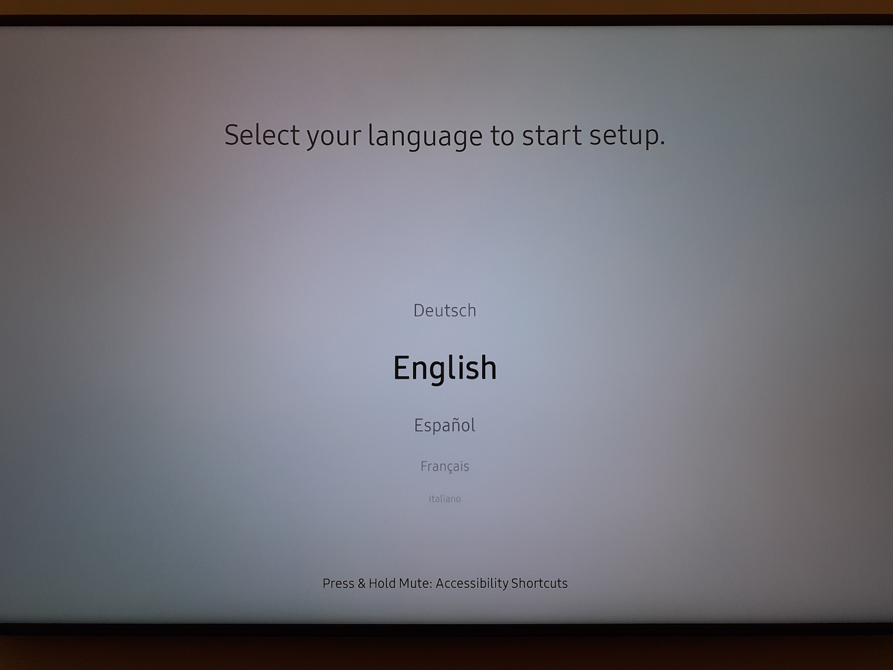
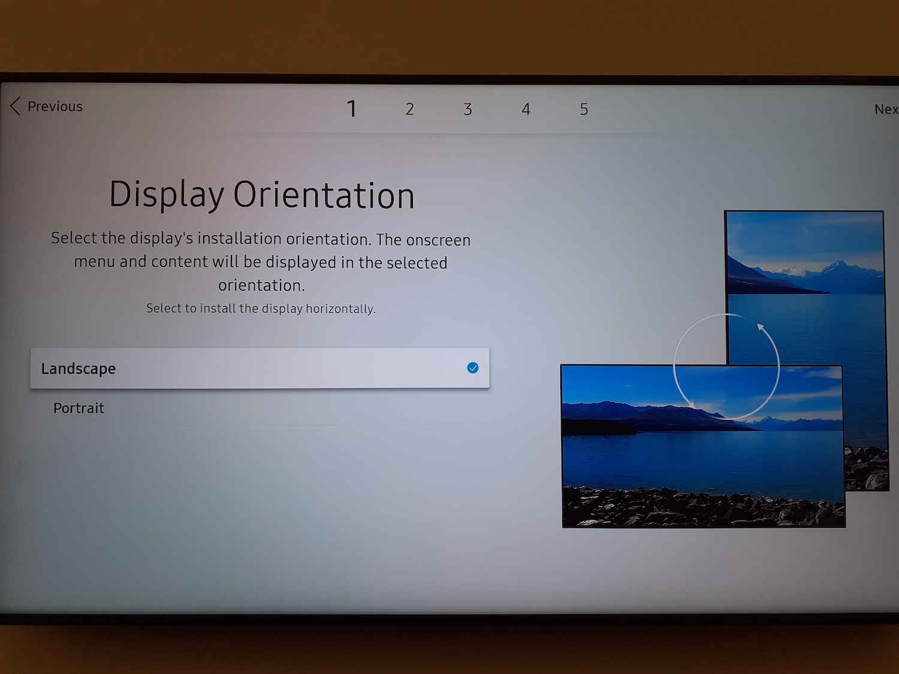
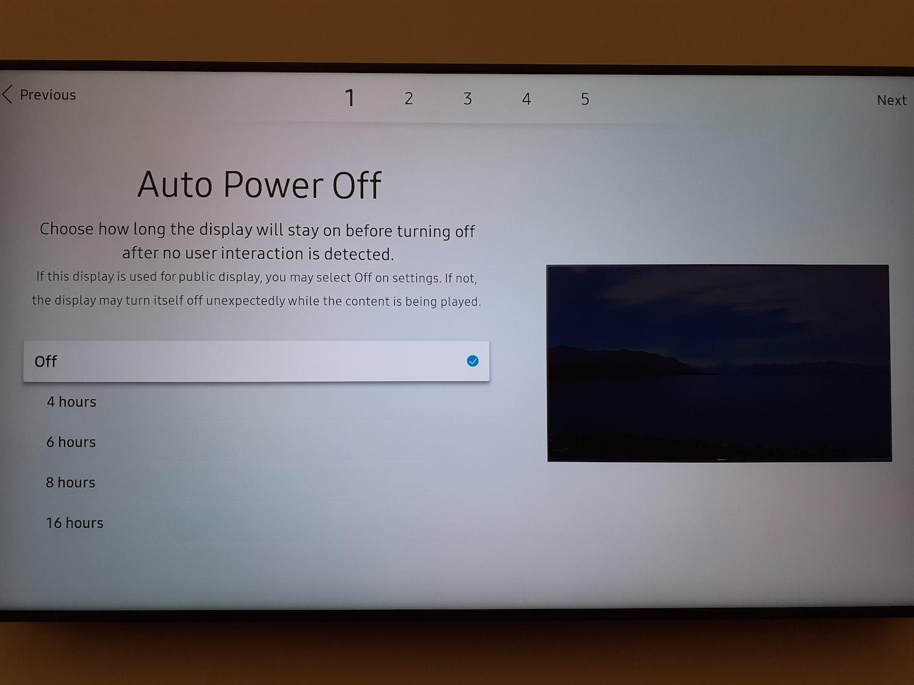

Choose your language
Choose LANDSCAPE as your screen orienttation
Auto Power OFF : Let the default parameters on OFF
The screen will automatically search for an internet connectin:
If your is cabled (RJ45 cable), it will conect by itself
You won't be able to install our application if you do not have an internet connection
Do not connect your screen to a guest Wifi network: it might not have enough permission to allow for optimal functionning
For Wifi : pick the desired network and enter the matching password

PLAY VIA : Choose URL Launcher

Enter the following URL 'http://tizen.deepidoo.com'
Do not change the other parameters
Connect to Remote Server : Choose to setup now.
Enter the address remote.deepidoo.com
No need to change the other parameters

Device on server : Do not change anything

Vérifiez la connexion au réseau : Cliquez sur le bouton HOME de la télécommande, allez sur ETAT DU RESEAU, puis validez